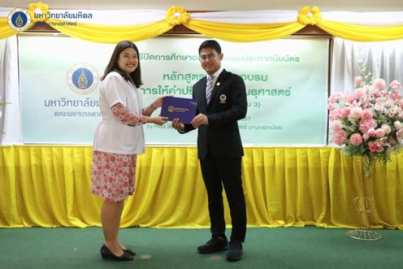
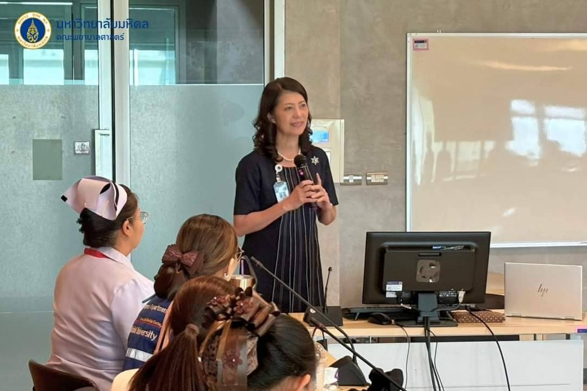
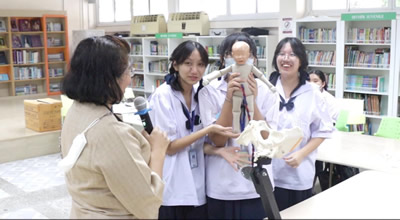
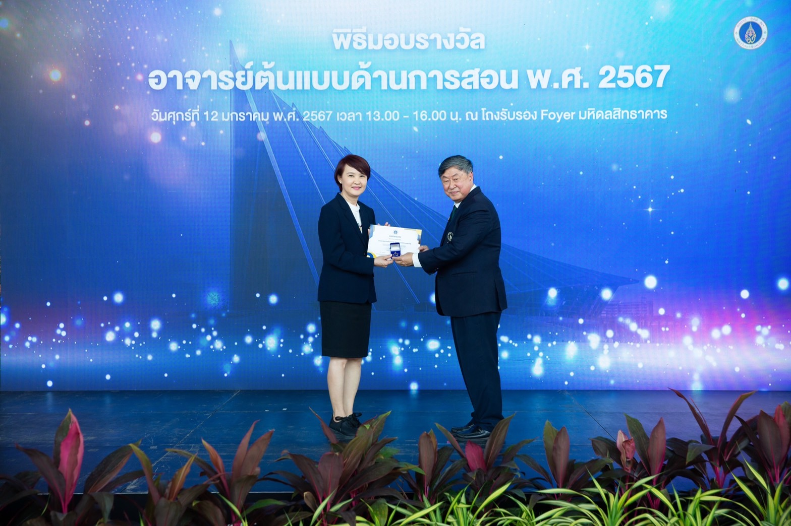
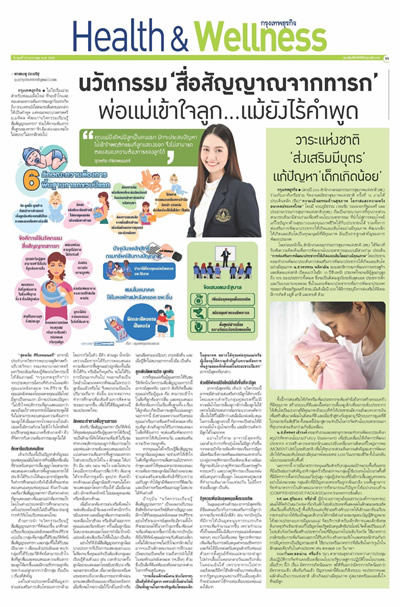

ข่าวกิจกรรม ประจำปี 2567
รายการ 1 นาทีกับพยาบาลมหิดล ออกอากาศทาง ททบ 5 หัวข้อ “คุณแม่ตั้งครรภ์ควรนอนท่าไหน?”
อ่านรายละเอียด

อาจารย์ ดร.รุ่งนภา รู้ชอบ รับมอบประกาศนียบัตร ในโอกาศสำเร็จการศึกษาหลักสูตรการฝึกอบรมให้คำปรึกษาทางพันธุศาสตร์ รุ่น 2
อ่านรายละเอียด
คณะพยาบาลศาสตร์ มหาวิทยาลัยมหิดลร่วมกับ ททบ.5 TV5HD Online ในรายการ "1 นาทีกับพยาบาลมหิดล"
อ่านรายละเอียด

พิธีปิดการอบรมเชิงปฏิบัติการเพื่อเตรียมพยาบาลในแหล่งฝึกให้มีสมรรถนะการพยาบาลในระยะคลอดและการสอนนักศึกษาพยาบาล ให้กับพยาบาลผดุงครรภ์ประจำแหล่งฝึก ศูนย์การแพทย์กาญจนาภิเษก
อ่านรายละเอียด
มหาวิทยาลัยมหิดล จัดพิธีลงนามบันทึกข้อตกลงความร่วมมือในโครงการสถานประกอบการต้นแบบสนับสนุนการส่งเสริมสุขภาพหญิงวัยเจริญพันธุ์และการเลี้ยงลูกด้วยนมแม่
อ่านรายละเอียด
ภาควิชาการพยาบาลสูติศาสตร์-นรีเวชวิทยา คณะพยาบาลศาสตร์ มหาวิทยาลัยมหิดลร่วมกับ บริษัทแมทซ์แม๊กซ์ จำกัด ได้จัดโครงการประชุมวิชาการ “พัฒนาศักยภาพพยาบาลผดุงครรภ์ประเทศสาธารณรัฐประชาธิปไตยประชาชนลาว ในการดูแลสตรีตั้งครรภ์คลอด และหลังคลอด”
อ่านรายละเอียด
สัมภาษณ์สดผ่านรายการ “เคลียร์คัด ชัดเจน” ประเด็น : นวัตกรรม "สื่อสัญญาณทารก สร้างสายสัมพันธ์แม่-ลูก" ทางสถานีวิทยุแห่งประเทศไทย ช่อง 11 NBT
อ่านรายละเอียด

จัดกิจกรรมเชิงปฏิบัติการสาขาวิชาพยาบาลศาสตร์ เพื่อเสริมสร้างความรู้ความเข้าใจให้กับนักเรียนตามหลักสูตรส่งเสริมการค้นพบตนเอง (Self-Discovery Curriculum for Lower Secondary School Level)
อ่านรายละเอียด

พิธีมอบประกาศนียบัตรผู้ได้รับการรับรองมาตรฐานคุณวุฒิคุณภาพอาจารย์ตามกรอบ UKPSF และผู้ผ่านการประเมินระดับคุณภาพการจัดการเรียนการสอนตามเกณฑ์มาตรฐานคุณภาพของมหาวิทยาลัย
อ่านรายละเอียด

การสัมภาษณ์กับหนังสือพิมพ์กรุงเทพธุรกิจ เกี่ยวกับ นวัตกรรมสื่อสัญญาณทารก ซึ่งแบ่งตามความต้องการพื้นฐานของทารกในช่วง 1 ปี แรกของชีวิต
อ่านรายละเอียด